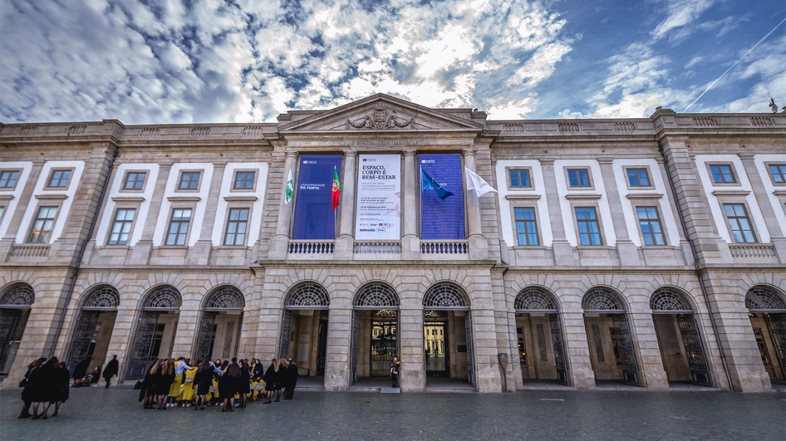
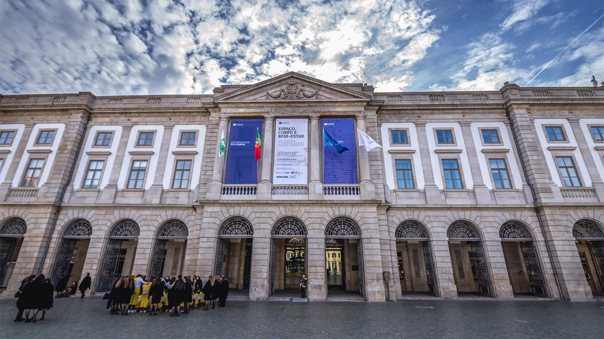

O curso de Jornalismo e Ciências da Comunicação, que tem como base um protocolo assinado pelas Faculdades de Letras , Engenharia , Belas-Artes e Economia , pretende combinar uma formação em Humanísticas (Ciências Sociais) com a vertente das novas tecnologias da informação e da comunicação e as dimensões estética e gráfica. Depois de frequentarem um tronco comum, nos dois primeiros anos, os alunos optarão, a partir do terceiro ano, por uma das seguintes especializações:
Pretende-se um leque vasto de saídas profissionais, das várias formas de jornalismo (escrito, radiofónico, televisão e online) aos gabinetes de imprensa e de imagem, passando pela produção de software educativo ou de materiais multimédia de todo o tipo.
Praça Coronel Pacheco, 8
4000 Porto
Telefone: 223 393 660
Fax: 223 393 668
Mail: mail@icicom.up.pt
 
